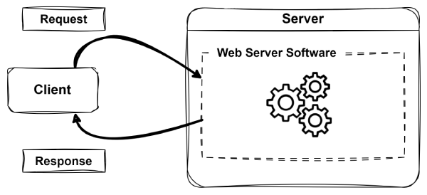
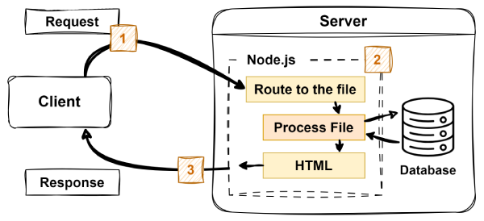
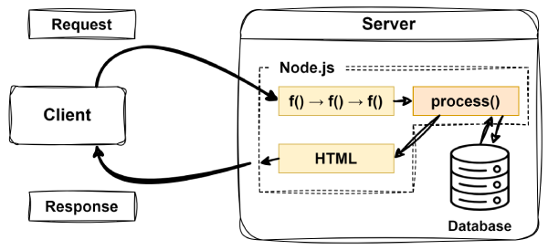
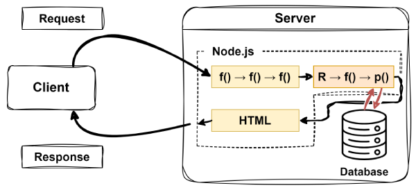

O Ciclo de Vida da Requisição e Resposta
O Ciclo de Vida de Requisição e Resposta é o processo fundamental pelo qual as aplicações web funcionam. Ele descreve como a requisição de um usuário é enviada para um servidor e como o servidor processa e responde a essa requisição. Em um nível elevado, os clientes (como navegadores web) enviam uma requisição para um servidor, que então processa a requisição e envia de volta uma resposta (como uma página HTML). É assim que se parece em um diagrama simples:

Aprofundando
O ciclo de requisição e resposta é um conceito fundamental no desenvolvimento web. Ele sustenta como os usuários interagem com aplicações web e como os servidores entregam o conteúdo apropriado. Compreender este processo é essencial, pois forma a base para tudo o que você irá construir e depurar neste curso.
Para entender melhor como funciona, vamos detalhar o ciclo de vida de requisição e resposta em suas etapas principais:
-
O Usuário Faz uma Requisição
- Um usuário interage com uma aplicação web (por exemplo, clicando em um link ou enviando um formulário).
- O navegador envia uma requisição HTTP para o servidor web, a qual inclui informações como:
- A URL.
- Método HTTP (GET, POST, etc.).
- Quaisquer dados sendo enviados.
-
O Servidor Processa a Requisição
- O software (aplicação) do servidor web recebe a requisição e determina como manipulá-la (por exemplo, Apache, Nginx ou Node.js).
- Se necessário, o servidor pode interagir com um banco de dados ou outros serviços para coletar dados.
- O servidor prepara uma resposta (por exemplo, uma página HTML, dados JSON ou uma mensagem de erro).
-
A Resposta é Enviada de Volta
- O servidor envia uma resposta HTTP de volta para o navegador do usuário.
- A resposta pode conter HTML, CSS, JavaScript ou outro conteúdo.
-
O Navegador Exibe a Resposta
- O navegador recebe e renderiza a resposta, atualizando a página web de acordo.

Middleware no Express
No desenvolvimento web moderno, especialmente ao trabalhar com Node.js e Express, o middleware é um bloco de construção essencial para manipular requisições HTTP. As funções de middleware permitem que os desenvolvedores definam e controlem o fluxo de requisições e respostas em suas aplicações. Sem o middleware, cada rota precisaria manipular manualmente tarefas repetitivas como log, autenticação e verificação de erros.
O middleware cria um pipeline de processamento onde cada função realiza uma tarefa específica e encerra o ciclo ou passa o controle para a próxima função na pilha. Essa abordagem modular torna seu código mais fácil de manter, flexível e simples de depurar.
O que é Middleware?
O middleware no Express é qualquer função que tem acesso ao objeto de requisição (req), ao objeto de resposta (res) e à função next() no ciclo de vida de requisição e resposta da aplicação. Essas funções são executadas em ordem, e cada uma pode inspecionar ou modificar os objetos de requisição e resposta, encerrar o ciclo ou delegar o controle para a próxima função.
Uma função de middleware no Express tem a seguinte assinatura:
(req, res, next) => {
// Your logic here
}
As funções de middleware são comumente usadas para tarefas como:
- Fazer log de requisições recebidas
- Verificar autenticação e autorização
- Analisar corpos de requisições
- Servir arquivos estáticos
- Tratar erros globalmente
Middleware em Ação
O exemplo a seguir demonstra duas funções de middleware, uma para fazer log de requisições e outra para tratar a autenticação:
// Middleware that logs request information
app.use((req, res, next) => {
console.log(`${req.method} ${req.url}`);
next(); // Pass control to the next middleware
});
// Authentication middleware
app.use((req, res, next) => {
if (!req.session.user) {
// Stop here, redirect to login
res.redirect('/login');
return;
}
// User is authenticated, continue to the next middleware
next();
});
A primeira função registra no log o método HTTP e o caminho de cada requisição. Em seguida, ela chama next(), o que garante que a requisição prossiga para a próxima função de middleware. A segunda função verifica se o usuário está autenticado. Se não estiver, ela encerra precocemente o ciclo de requisição-resposta redirecionando o usuário para uma página de login.
Controlando o Fluxo com next()
A next() função é o que vincula cada função de middleware à próxima. Se uma função de middleware chamar next(), a próxima função na pilha é executada. Se ela enviar uma resposta (por exemplo, res.send() ou res.redirect()) o ciclo termina aí; você não deve chamar next() após enviar uma resposta.
Esse mecanismo permite escrever uma lógica expressiva e em camadas. Por exemplo, você pode ter uma função de middleware que configura um objeto de usuário, outra que verifica permissões e uma terceira que lida com a lógica de negócios real para a rota requisitada.
Middleware e o Ciclo de Vida de Requisição-Resposta
Funções de middleware — f() neste exemplo — são executadas na ordem em que são definidas na sua aplicação. Quando uma requisição chega, o Express a processa executando cada função de middleware em sequência. Se uma função de middleware não chamar next(), o ciclo para, e a resposta atual (se houver) é enviada de volta ao cliente.
Idealmente, as funções de middleware eventualmente levarão a um middleware especializado conhecido como manipulador de rota — process() neste exemplo. Manipuladores de rota são as funções que geram a resposta real para o cliente com base na requisição. Aqui está um diagrama simplificado de como o middleware se encaixa no ciclo de vida de requisição-resposta:

Roteamento no Express
Depois que o middleware prepara ou filtra uma requisição de entrada, a próxima etapa crucial é determinar como responder. É aqui que o roteamento entra em jogo. O roteamento é o processo de mapear requisições HTTP recebidas para o código específico que as manipula. No Express, as rotas definem como sua aplicação responde a diferentes endpoints e métodos HTTP.
Cada rota em uma aplicação Express é essencialmente uma combinação de duas coisas:
- Um método HTTP (como GET, POST, PUT ou DELETE)
- Um caminho ou padrão de URL (como
'/' ou '/users/:id')
Quando uma requisição corresponde tanto ao método quanto ao caminho de uma rota definida, o Express executa a função manipuladora associada para gerar a resposta.
Definindo Rotas no Express
As rotas são normalmente definidas usando métodos como app.get(), app.post(), app.put(), e app.delete(). Cada um deles corresponde a um método HTTP e aceita dois argumentos principais: o caminho a ser correspondido e uma função para manipular a requisição:
app.get('/', (req, res) => {
res.send('Welcome to the Home Page!');
});
app.get('/about', (req, res) => {
res.send('This is the About Page.');
});
app.post('/submit', (req, res) => {
res.send('Form Submitted!');
});
Neste exemplo:
-
app.get() é usado para manipular requisições HTTP GET, comumente utilizadas para recuperar dados ou exibir páginas.
-
app.post() manipula requisições HTTP POST, que são normalmente usadas para enviar dados ao servidor (como ao enviar um formulário).
- O segundo argumento de cada função de rota é um callback que recebe
req (a requisição) e res (a resposta).
- A lógica dentro de cada manipulador determina qual resposta é enviada de volta ao cliente.
Este curso foca em introduzir os conceitos fundamentais de aplicações web renderizadas no lado do servidor. Tópicos avançados, como APIs RESTful, serão explorados em cursos subsequentes. Por enquanto, você trabalhará principalmente com os métodos GET (app.get()) e POST (app.post()). Evite usar métodos específicos de API, como PUT e DELETE, pois eles estão fora do escopo deste curso.
Roteamento Dinâmico e Parâmetros
As rotas também podem ser dinâmicas, permitindo manipular requisições com dados variáveis no caminho. Por exemplo:
app.get('/users/:id', (req, res) => {
const userId = req.params.id;
res.send(`User ID: ${userId}`);
});
Aqui, o :id no caminho atua como um espaço reservado. Quando uma requisição é feita para /users/123, req.params.id conteria o valor "123". Isso é útil porque o número do id permite identificar e recuperar recursos ou dados específicos. Por exemplo, você pode usar isso para exibir uma página de perfil para um usuário específico, buscar detalhes de uma publicação de blog específica ou recuperar informações de produtos, tudo com base na parte dinâmica da URL.
Ordem de Roteamento e Integração de Middleware
As rotas no Express são correspondidas na ordem em que são definidas. Assim que uma correspondência é encontrada, nenhuma outra rota é verificada, a menos que next() seja chamado explicitamente dentro do manipulador de rota. Isso torna a ordem das rotas importante, especialmente ao trabalhar com middleware específico de rota ou rotas genéricas (catch-all).
O middleware pode ser anexado a rotas específicas para executar tarefas como autenticação, log ou validação de dados antes que o manipulador de rota realmente seja executado. Isso permite construir uma lógica em camadas com controle detalhado.
Roteamento e o Ciclo de Vida de Requisição-Resposta
No ciclo de vida de requisição-resposta, o roteamento serve como o mecanismo que mapeia as requisições recebidas para o código apropriado para gerar uma resposta. O Express avalia cada requisição correspondendo seu método HTTP e caminho com as rotas definidas. Quando uma correspondência é encontrada, a função manipuladora correspondente é executada para processar a requisição e gerar uma resposta. Se nenhuma rota corresponder, é essencial tratar esse cenário respondendo com um status 404 Not Found. Isso pode ser alcançado usando uma rota especial de tratamento de erros, que será discutida em mais detalhes posteriormente no curso.
Aqui está um diagrama simplificado mostrando como o roteamento se encaixa no ciclo de vida de requisição-resposta. Os principais elementos incluem:
-
f() funções de middleware pelas quais a requisição passa antes de atingir um manipulador de rota específico.
-
R o manipulador de rota que processa a requisição correspondida, possivelmente protegido por um middleware específico da rota f().
-
p() o manipulador de rota finalmente gera a resposta a ser enviada de volta ao cliente.

Próximos Passos
Para aprofundar sua compreensão sobre como o roteamento e o middleware funcionam, especialmente em relação ao framework Express, explore os seguintes recursos:
Ao ler estes guias, tente experimentar com os exemplos de código fornecidos para observar como o roteamento e o middleware funcionam em vários cenários. Além disso, explore outros recursos, como vídeos ou artigos que explicam esses conceitos de maneiras diferentes. Se você usar ferramentas de IA, use o ChatGPT para que possa compartilhar facilmente uma transcrição da sua conversa.
Envio de Reflexão
Após explorar esses conceitos, resuma sua compreensão e destaque quaisquer áreas que achou desafiadoras. Compartilhe os recursos que o ajudaram a entender esses tópicos e explique-os com suas próprias palavras. Se você usou ferramentas como o ChatGPT para aprendizado adicional, inclua uma transcrição da sua conversa usando o recurso de compartilhamento. Além disso, se você descobriu um vídeo ou artigo útil, forneça um link para ele. Envie sua reflexão por meio do Canvas, garantindo que seja clara, concisa e bem organizada.